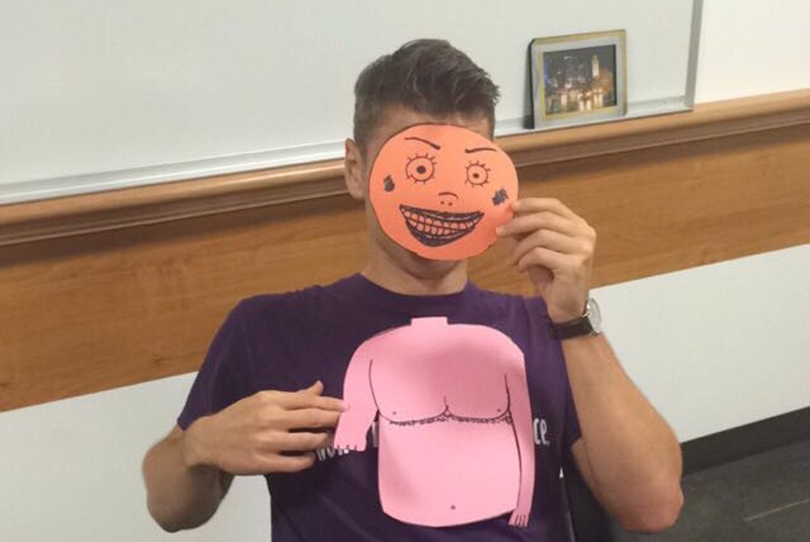
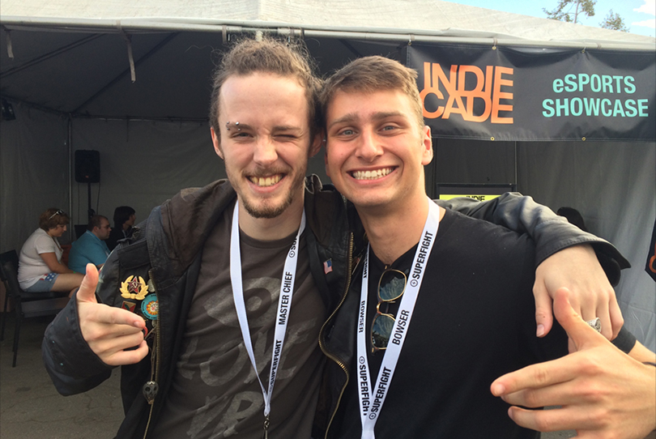
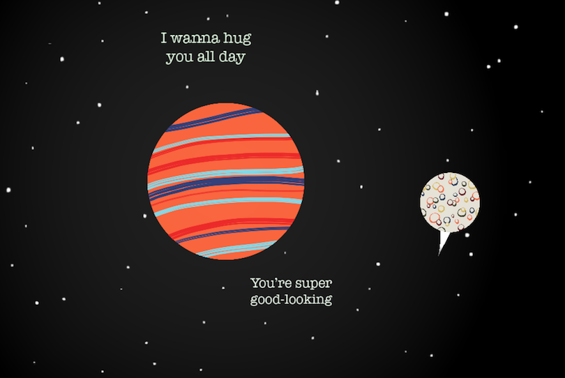
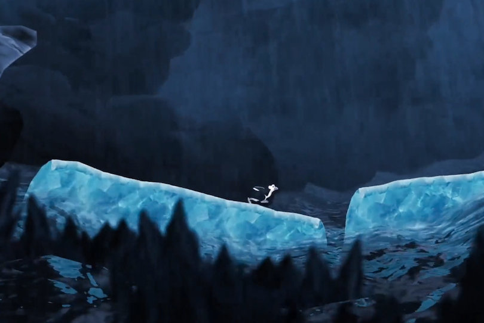
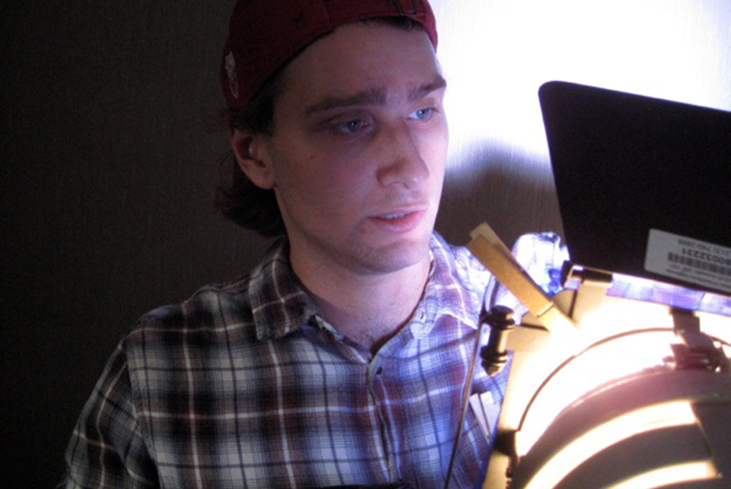
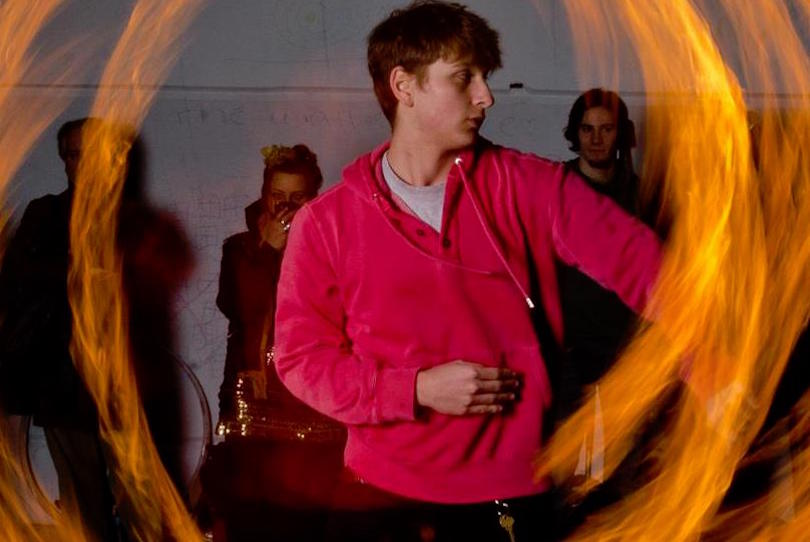

I'm passionate about making engaging experiences. I get 'it' done. Call me what you’d like: Producer, Product Manager, Designer, Engineer, Artist...
Hello! My name is Bartow. Here you will see many examples of my work including games, code, films, and samples of my writing. I am a bibliophile and take an autodidactic approach to all of my work, pursuing whatever knowledge I need to aquire to complete my projects artfully and to the best of my ability. As a result of this mentality I have had the opportunity to be a Poet, Musician, Filmmaker and Entrepreneur in addition to all of the roles listed above.
I try to bring enthusiasm with me wherever I go.


Connecting with people is my primary passion.
That has led me to a lot of questions, which have guided my work, including: What makes an interaction meaningful? What about an experience? How can we improve interpersonal relationships through technology? What makes an experience “real”? And what would it look like to make one?
Find out more about me
Asking these questions in the creative process can often lead to an endless feedback loop and it can often lead to a complete creative shutdown. Perfection is a fruitless pursuit. Instead…
“Don’t think. Thinking is the enemy of creativity. It’s self-conscious, and anything self-conscious is lousy. You can’t try to do things. You simply must do things” – Ray Bradbury


I’ve been making games for most of my life.
I see games as one of the best ways to communicate empathy—how else can you make someone feel what you want them to feel than by engineering an experience designed to do exactly that?
I’ve made traditional platformers, arcade-style games, and plenty of other games with experimental technology, like the Intel RealSense Camera and the HTC Vive, and subject matter, like body image and mental health. I’ve published work on the App Store, Steam, Itch.io, and Game Jolt.
Check out some of my games
Here’s a list of software, and hardware I’ve worked with.
Languages: C# | JavaScript | HTML | CSS | Java
Engines: Unity | Unreal | GameMaker | Twine |
Other Software: Photoshop | Illustrator | Slack | Asana | Jira
OS & Hardware: Windows & OSX | iOS & Android | HTC Vive | Leap Motion | Intel RealSense Camera | Arduino

But sometimes it’s better to frame our stories.
Outside of games, I’m a fan of photography and filmmaking. I’m a huge fan of traveling and meeting people and a fanatic about trying new experiences (check out my about page), and love to photograph portraits and landscapes of the different scenarios I encounter.
As for video: I’ve produced many shorts in my time at USC, I’ve produced and crewed for the campus television network, and I’ve produced over 150 videos for a gaming channel on YouTube.
And as someone with a passion for storytelling, I am also a writer. Aside from writing the scripts for my games and shorts, I'm a dedicated poet. I like to write and perform Slam poems--And I've even had the fortune of meeting some of my favorite poets in the last couple years including Hanif Willis-Abdurraqib, Jared Singer, and Javon Johnson.
